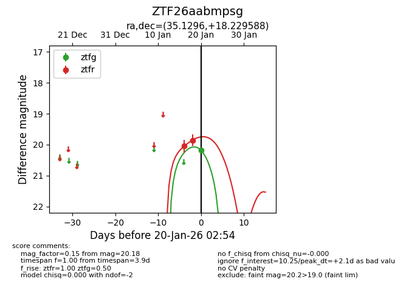
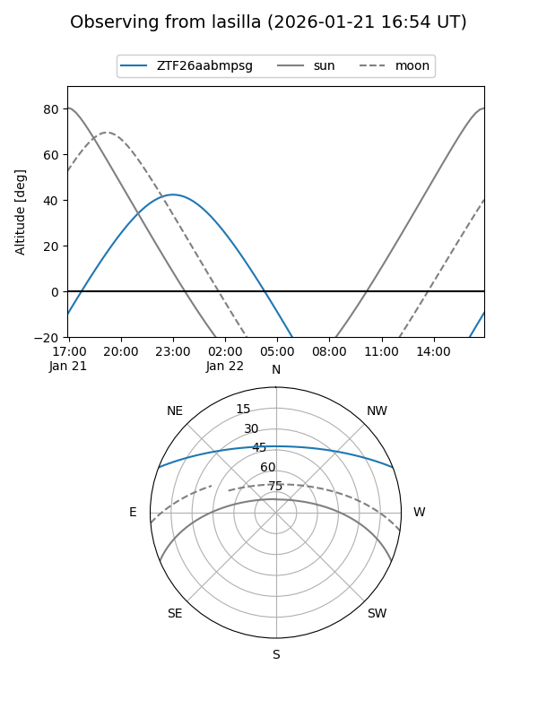
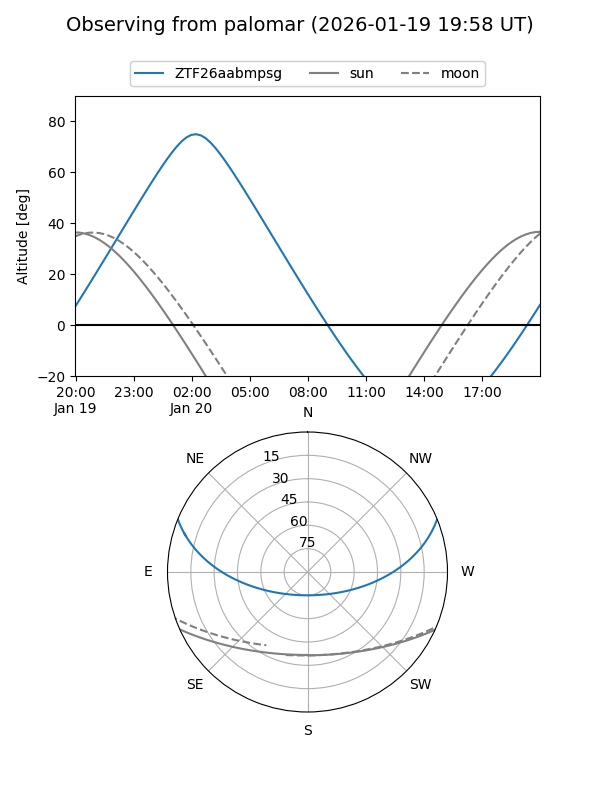
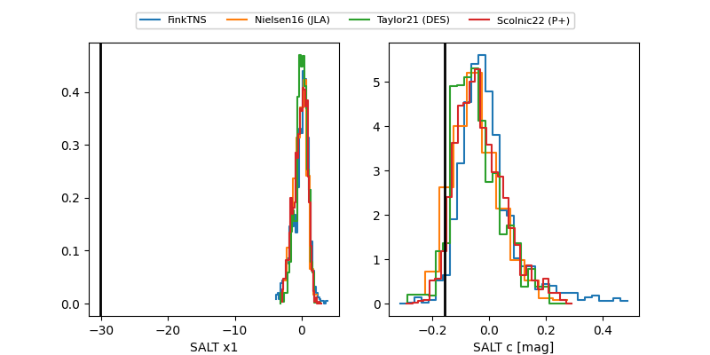

ZTF26aabmpsg
Target ZTF26aabmpsg at 2026-01-22 03:01
Aliases and brokers:
FINK: link
Lasair: link
ALeRCE: link
alt names
ZTF26aabmpsg (ztf,fink_ztf)
Coordinates:
equatorial (ra, dec) = 35.1296,+18.22959
equatorial (HMS+DMS) = 02:20:31.09,+18:13:46.52
galactic (l, b) = (150.8538,-39.76367)
Flags:
Photometry:
last ztfg=20.18, ztfr=19.87
1 ztfg, 3 ztfr detections
Lightcurve

Visibility


Additional plots
